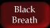

If You are unable to see this
page, then I'm Sorry, but you need a newer Browser e.g. IE5!
Please send me some curious descs of other spells.
Please send me some curious descs of other spells.
|
|
|||
|
|||
|
If You are unable to see this
page, then I'm Sorry, but you need a newer Browser e.g. IE5!
Please send me some curious descs of other spells. |
|||



|
Blindness Teacher: East of Last Bridge the evil priest. |
This is one of the most useful spells on Arda! So every shaman should have it! Practice when possible and max it! Use quick blinds when some targets are too aggressive. They take more mana, but most of the times its worth it. |
|
Curse Teacher: East of Last Bridge the evil priest |
This spell curses its victims or even
items by the will of Morgoth itself!
It makes your target more clumsy and also the weapons get more heavier
and useless. When this magic is casted on the victim, his visions of
land power lines comes hazed, so he cannot recall to safety anymore. |
|
Black Breath
Syntax : cast 'black breath' Type : Offensive, special Accumulative: N/A Duration : No Casting : Very long Position : Standing Level : Level 16 Class : Cleric Min. Mana : 25 Pracs: Alot |
If you are going to practice the dreadful
spell of Black Breath, then you should find a fellow shaman to learn
the ancient lore with you and also find a warrior to guide you around! I don't recommend practising this spell at all, unless you are in a lab or have other wise shamans who know this lore. |
|
Hold
Syntax : cast 'hold' Type : Offensive, mental Accumulative: No Duration : Yes Casting : Extremely long Position : Standing Level : Level 17 Class : Cleric Min. Mana : 25 Pracs: Alot Teacher: East of Last Bridge the evil priest |
Oh man did this spell rock in MUME6 or what. Every shaman walking on Arda, who knew the lore of Hold, was to be frightened.. Because the power unleashed with the paralyzing shock, came fatal even the to fastest, cleverest and wimpiest players on Middle Eearth. Now in MUME7 the spell is a JOKE. It paralyzes the victim, after what you can cause him some minor damage, after what he will still be shocked, what had happend. |
|
Fear |
This spell is always handy, when exploring the strange land. It releases great amount of mental energy, forcing the weaker beings to flee in utter fear or even cause a hart attack to the mightiest of whiteskins. Use this spell wisely. |
|
Burning Hands |
A fast and quite handy melee spell, When you are lower level or geting too tired from the focusing power of whiteskinss, use this fast spell to break their concentration or even some damage. The damage is not great, but when you have all the power elements, it's still a spell to even cause death to the enemy. |
|
Chill Touch |
This is even weaker spell, than the Burning Hands, but also causes victim to go in shock, after what he cant orientate so well and because of that, gets a little more clumsier. When you are lower level or geting too tired from the focusing power of whiteskinss, use this fast spell to break their concentration. |
|
Shocking Grasp
Syntax : cast 'shocking grasp' [victim] Type : Offensive, physical Accumulative: N/A Duration : No Casting : Normal Position : Standing, fighting Level : Level 7 Class : Magic User Min. Mana : 9 Teacher: The black mage inside the Caves |
This is stronger spell, than the Burning
Hands and nothing more. When you are lower level or geting too tired from the focusing power of whiteskinss, you can also use this spell to break their concentration. |
|
Earthquake |
This is a very dangerous spell indeed. It is not so efficient with slaying the whitescum, because you will be in trouble after unleashing the spell and cannot concentrate enough to make a second attempt. |
|
Lightning Bolt |
This is the most used spell on Arda, Though be aware, an ancient lore goes, that in the realm of the Dragon, a powerful parchment is to be found, what can deflect any damage from lightning and even reverse its damage to the very source! |
|
Harm |
This is the best spell for the true race on Arda. The mental damage of harm can be the last breath for the inconvenient disturber. The Power what is unleashed, will annihilite the very soul of the victim, thus causing him greatest harm possible. The maluse of the spell is its concentrating time and the huge cost of mental power. But when you already get your victim down, then be sure you call the great pain on your victim. With the power elements, it can cause damage unbelivable! Another backfire may be, that you will try to destroy the person, but when he is already insane, then the spell will have no effect and the final blow must be delivered by physical attack!! |
|
Armour
Syntax : cast 'armour' [self-only] Type : Defensive Accumulative: No Duration : Yes Casting : Long Position : Standing Level : Level 3 Class : Magic User Min. Mana : 30 Pracs: 16 Teacher: The black mage inside the Caves |
This spell is a must for every magical
abilites creature on Arda. It will create a magical barrier around youy
soul, so that all physical power will be saved on quite high scale.
Still this spell will not save from the mental harm, like Blinding and
the spell of Harm. This is the spell that eventually |
|
Shield |
Spell with same importance as the Armour. It raises considerable amount of your doding bonus. Learn it well! Be aware, that when you have practised the skill of dodging, the spell will be less efficient, because you already use the same lore by dodging naturally! Be sure you refresh this spell every day or even more often, because after first concentration it will start to diminish! |
|
Strength |
This spell will make your blood flow
more easily. Thus affecting your body endurance and overall strength. Also dont forget to grant this harmony to your fellow groupmembers and friends! |
|
Shroud |
This is a useful spell, if you love
to travel and hate geting interrupted by stupid animals, call the power
of air to your aid. |
|
Cure Light |
This spell will use the power of nature
to heal your physical wounds. |
|
Cure Serious |
This spell will use the power of nature
to heal your physical wounds. |
|
Cure Blindness |
This spell is very efficent and can
save your life in the daring situations. |
|
Remove Curse |
This is another worthless spell, |
|
Remove Poison |
Every caster should learn this ancient
spell of removing the poisons from the shivering body! |
|
Cure Critic |
This is the most powerful spell of healing, granted by our god Morgoth. You can never know, when the tree will
fall on you, but you will die when you cant walk after that! Warriors and other great classes of
Orcs, when badly wounded, should just bound their wound and rest some
a day, |
|
Break Door Teacher: Old Sage at the Great Redhorn Pass |
You can never know, when the guard locks
the gate or a boulder crumbles. I suggest that every shaman should learn
this! Many don't and i can hear
their deathcries, when their greed lured them to some old crypt or castle! |
|
Control Weather |
A spell of great power and mystery. No one knows how well or bad you can
control the powers of nature, but with this spell you can make the pretty
sky to dark lightning throwing hell! |
|
Word of Recall |
This spell lets you recall to strange
places on land, where the wild energy flows free. |